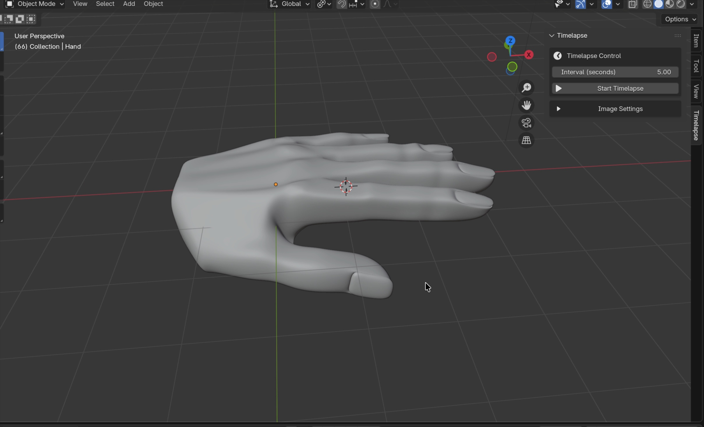
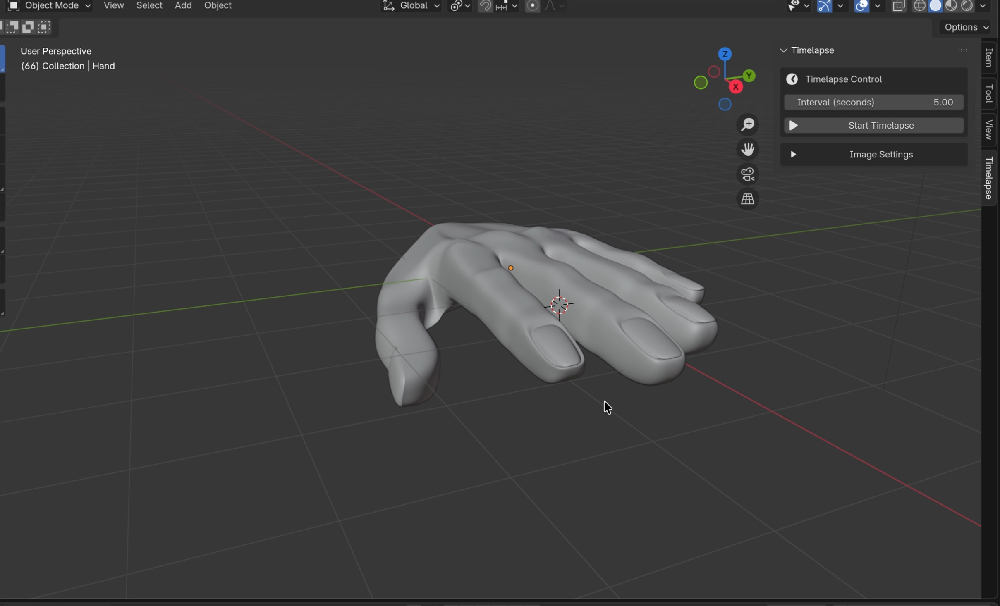
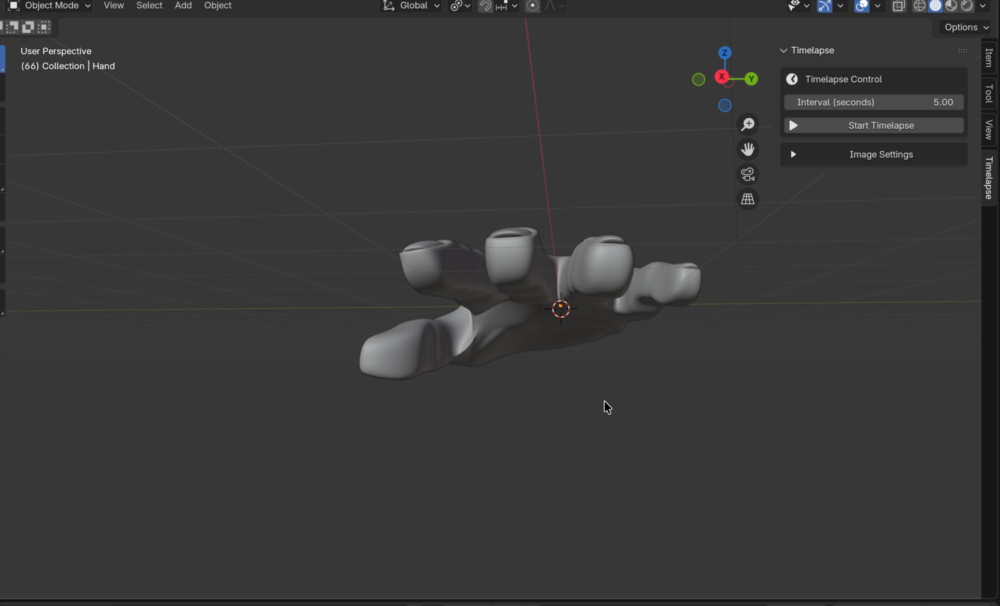

Projekt • 3D-Modellierung (3. Semester)
3D-Handmodellierung in Blender
Im dritten Semester bestand im Modul 3D-Modellierung die gestalterische Aufgabe darin, die eigene Hand als dreidimensionales Objekt in Blender detailgetreu nachzubauen. Der Schwerpunkt lag auf sauberer Mesh-Topologie, anatomischen Proportionen, fließenden Edge-Loops an Gelenken und Fingerknöcheln sowie präzise ausgearbeiteten Fingernägeln und Daumenansätzen.
360°-Viewport & Modellansicht
Perspektiven & Modellierungsdetails

Oberhand & Knöchelstruktur — Ausarbeitung der Fingernägel, Nagelfalze und Knöchelübergänge

Handinnenfläche — Anatomische Wölbung von Handteller, Daumenballen und Handgelenkansatz

Frontalansicht — Natürliche Krümmung der Fingerglieder und räumliche Tiefenstaffelung